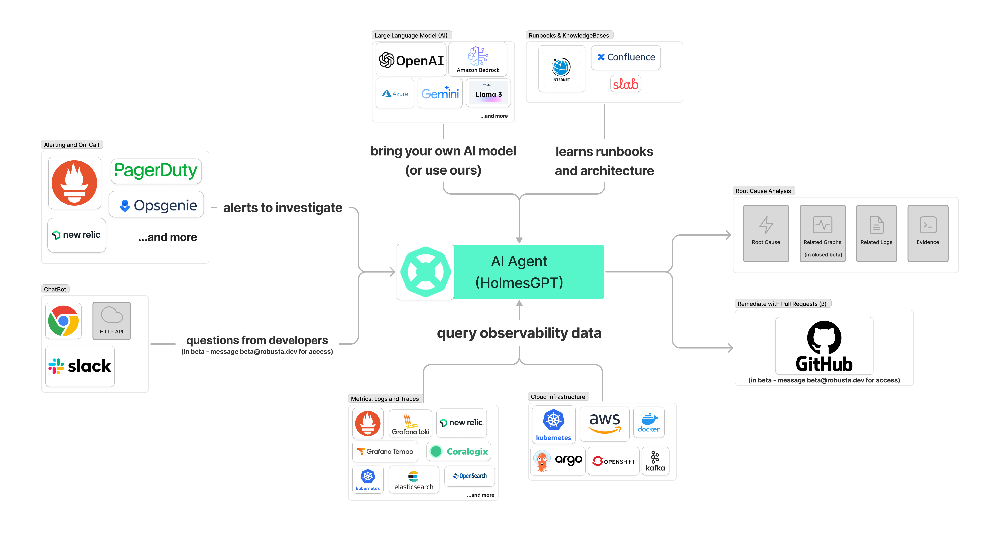

Learn why HolmesGPT works for incident debugging, where general agent stacks win.
HolmesGPT is strongest when incident response needs guided investigation rather than open-ended chat.
The system works because it can correlate incident evidence from multiple channels, not because it has one smart model prompt.
Alerting and collaboration systems provide the starting signal.
Observability, infrastructure, and runbooks supply evidence.
The model layer turns structured evidence into diagnosis and next actions.

These are the main input classes HolmesGPT pulls together during incident analysis.
Paged incidents and alert signals entering the workflow.
Examples: PagerDuty, Opsgenie, New Relic alerts
Interactive questions from responders and external API requests.
Examples: Slack, web UI, HTTP API
Core observability telemetry queried during investigation.
Examples: Prometheus, Loki, Tempo, Elasticsearch
Infrastructure state and runbooks that turn raw signals into operational judgment.
Examples: Kubernetes, AWS, Argo, Confluence, internal docs
The loop enforces evidence-backed progress instead of repetitive tool chatter.